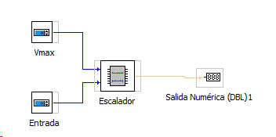

ESCALADOR
Este bloque esta pensado para escalar las señales analógicas de la tarjeta Arduino cuyo valor máximo es 1023. Se trata de escalar el margen de 0-1023 entre un nuevo margen de 0-Vmax
El bloque posee dos entradas:
Vmax: Valor maximo escalado
Entrada: Valor de entrada de la señal (0 a 1023)
La salida es:
Salida escalada: Variará entre 0 y Vmax
Ejemplo de uso:
